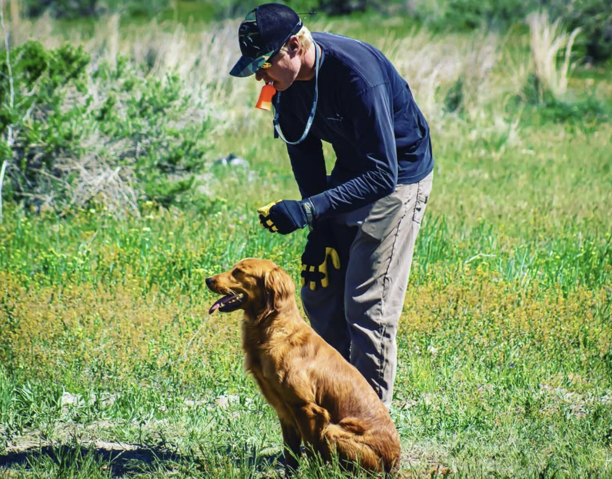

Episode 3 · May 04, 2023 · 990
The Power Of Physical Touch

About This Episode
In this episode we discuss how physical touch is used to communicate with your dog. Thanks for listening and have a great day!
Questions about the training topics in this episode? Tyce works with bird dog owners and hunters through Utah Bird Dog Training. Reach out to work with him directly.
Resources & Links
- Utah Bird Dog Training — Work directly with Tyce — professional bird dog training services in Utah.
Transcript
Full transcript for Episode 3: The Power Of Physical Touch.
Tyce
Hey everyone. Welcome to the Bird Dog Podcast. My name is Ty Erickson. I'll be your host today.
And today I wanted to talk, the topic I wanted to talk about is the power of touch, or communication with your dog through physical contact., this is a really important topic and I think. At times, a lot of, people don't realize that when they're touching their dog, they're actually communicating a lot of information, with their dog. And, and so hopefully this podcast will help you to be a little more, to think about what you're communicating as you, as you touch your dog, as it's growing up as a puppy or an adult or whatever. Obviously that may be so, You wanna remember, dogs always want to be the pack leader.
They wanna be the boss. They wanna run the show. And so a lot of times they're trying to get life to work, to work for them. some of the common things you'll see when dogs, communicate to us. When I'm training, when a dog comes to heal and comes and sits at my side, very commonly you'll see them try to put their foot.
On top of your foot. And a lot of people don't realize, I've even had some client say, oh, this is a, this is, my dog does this and this is a really cute thing. He like kind of puts his foot on top of my foot. And what they don't realize is that foot on top of your foot is like someone stepping on top of your foot, putting their. authority above yours. so a foot on top of your foot is not a, is not a good thing because we want that dog to be in our pack and perceive you as the leader of the pack.
And so if that dog comes up and he puts his foot on you and you let him do that, he's getting a little bit of authority in his mind that he's kind of the boss. He runs this show you work for him, that type of thing. So that being said, if you see that, just step your foot away and what you can actually do is not heavily step on the dog's foot, but you can actually put your foot over their foot and communicate. You're the boss and so you want to use the same psychology that dogs. try to use on us, cuz we're trying to talk in dog, dog communication.
And help them understand dogs, see things in a dog outlook. Humans, obviously we're humans, we see things in a human outlook. we want to try to communicate at their level. so that's one thing to be, aware of. Okay. Also, very commonly you'll see dogs or your dog will come up to you and they'll muzzle you.
They'll put their nose in you. And then what do you usually do? You usually will pet the dog. Okay.
So that dog did something and got you to work for him. Who's in charge now? The dog is in charge. He muzzles you.
You pet him. Okay. You're working for him, so you wanna understand that. So if you want to pet your dog, And he muzzles you, puts his nose in you to try to get you to pet him.
Ignore him. Or you can kind of push him away, maybe stand up, do something, then come back down. And then when you're ready, now call him to you Now. Pet him on your time schedule.
Now, who's in authority? You are in authority because you, had him do it when you wanted, not when he wanted. so just that little physical touch can be really important on the, on the psychology of the dog. Very commonly too, dogs will lick their lips when they're understanding a concept. So if you're working on the sit command and the stay or down or whatever, if the dog understands what's going on, they very commonly will kind of lick their lips to let you know that they're getting it.
If they're not. they're, I think they're still gathering information, but that's just some little cues you can look for that can, that can help in, in the dog that they will, physically show you to say, Hey, I'm I'm, I'm, I'm understanding the concept, what you're putting out. dogs are a very reward based animal, as many of you know, when they're puppies. We start with treat training a lot of times. So you tell the dog to sit. You give 'em a treat, tell the dog to come to you, you give 'em a treat.
And now that then they start going, oh, if I sit I'm rewarded. If I do this behavior, I get a treat. They're working kind of for themselves at that point, cuz they're, they want that food. They're hungry, they're growing.
If you have some really good treats, some ham or, or, meat or whatever you're using for your treats when that dog does that behavior and is rewarded, they want to do that behavior more. And so when a dog is a con is in a controlled location where there's things that aren't distracting it there's not a bunch of kids running around or other dogs running around, and they can focus the reward-based training works really good when they're puppies because you are, because they're motivated by food and when they do a certain action, they're, they're rewarded by that food. when it comes to, again, physical touch on a dog, I found that you can, you, you are training the dog a lot with physical touch, so when a dog sits, you can pet them, stroke 'em down their back, kind of down their side. Good. Sit it good and let 'em know that that's.
That's what you're wanting. And dogs love to be pet. So it's like giving us some a, a scratch on the back. A lot of people like to have their back rubbed or back scratch or whatever, you know.
And so when you do a behavior or when you show the dog a behavior and tell 'em the command, and then you give them that scratch on the back or the scratch on the head, they again want to be, they like to be rewarded for that behavior. And so, It's like when you're teaching the dog to stand at, whoa, stroke 'em down their back. Whoa, whoa. Talk nice and calmly and rub 'em down.
You're teaching 'em literally through physical touch that when you do this behavior, you're gonna get a, a rub down your back and they're gonna want more of that. so it's, it's pretty amazing, like when you're working on, and I'm kind of jumping around here, different things like force fetch training and stuff like that. If I have that dog, if I put a bumper in the dog's mouth until the dog hold, or a dowel or whatever, paint roller or whatever you're using, and immediately I put it in the, put it in the dog's mouth and then I start petting the dog. The dog's generally gonna hold that better if he drops. That bumper or that doubt, I immediately stop petting him.
Okay. I, and then as soon as I get it back in his mouth, I start petting him again. Okay. Giving him that physical touch.
Dogs learn very quickly that, that physical touch, it coincides with that, that, the action that they're doing. And so, So I can force fetch dogs a lot easier because I, if you just stick a bumper or a Dow in the dog's mouth, and a lot of you maybe aren't familiar with force fetch and that's something we can, I'll talk about down the road. But if you stick that in that dog's mouth and you don't pet the dog or you don't give it the very least, hopefully you give it some verbal praise. Oh, that a boy just really encourage that dog, letting him know that if you use the verbal praise plus.
The, the, the petting them, the dogs, they're gonna enjoy that. They're gonna love that. And they're gonna want more of that. They're gonna wanna hold that in their mouth.
But if you just put it in their mouth and don't say anything and you're just like, hold, hold, hold. Yeah, they're gonna figure it out. But it's, you're gonna, it's gonna be a little more forced compared to like using some force plus the physical touch to teach them what you want. So it's pretty interesting how you know these dogs can be rewarded.
Obviously physical touch can also be a correction. You can also correct a dog with physical touch. Give a smack on the nose if they're barking or if they're biting or something like that, that they're sent. Okay?
That behavior, I just did receive this type of correction and that wasn't very fun and that wasn't very comfortable. So I'm gonna stop doing that behavior because that I got that correction from doing that behavior again in a positive sense. When I do this behavior and I get petted and loved on or treat or these type of things, they want to do more of that. There's times when they do need to be corrected, and a negative consequence may need to happen, but most of the time you can train a lot through.
Positive. So what we really want, at least with our training, is we want it to be kind of muscle memory. The commands. We want it to be really positive.
We want it to be something that's obviously the dog is happy and shows confidence. And I mean, it's way more fun to look at a dog or work a dog that looks happy, that looks confident, but the at times just like. Us as we maybe go to school and we're in math class. It might not be very fun as we're learning things or we're doing things we maybe don't want to. those can, that can kind of be hard., and so, but as we understand the math equation or we understand the concept, then, then we gain more confidence because we know exactly what's going on and dogs are the same way.
If they have a brain just like us, and as if they're under stress of learning a new concept, then, then they can act not as confident. But then as they understand that through proper training, consistency fairness, then they, and their brain is trained and they understand the language that you are teaching them, then they then they, get more confident. So this podcast, I didn't plan to have it be real long. I just wanted, to kind of touch on this concept of physical touch again.
So dogs are very, they loved, they love physical touch. So just remember when you use physical touch that you use it to your advantage. It will go a long ways when it comes to training. When you teach a concept, just like you mark something, when a dog does something, they like clicker training or you give 'em that a boy or that a girl or whatever it is, and you say, Hey, that's what I want.
Physical touch in unison with that can pay some good dividends. So sit, good girl, pet down the dog's back, or good boy or whatever, and physically touch 'em. But then remember also don't. When you comes to physical touch, again, like we talked about earlier, like a dog leaning into you, this is another one we can talk about real quick.
A dog's, very commonly, they'll come and they'll push their body into you. Well, if you pet the dog, you just rewarded him for pushing his weight on you or against you, and we think, oh, that's so cut. He loves me. Well, He does, but he's getting you to work for him.
He leans into you, you pet him up, you love on him, you, he falls over, you roll his be you, lay, you rub his belly that he is getting you to work for him. And just remember to do that on your timeframe when you want to give it. So if you wanna give him a belly rub, tell him to come to you, have him lay down and give him a belly rub. So don't have him get you to work for him.
And again, that just talks about again, the power of touch. How many dogs, when they learn a belly rub feels good, come up to you and wanna roll over and have their belly rubbed down. They love to be touched. And so I just remember the power of touch, very calmly.
Also, dogs will come and they'll sit in front of you. They'll sit on your toes in front of you. That's also a thing. They're out in front of you.
They're wanting to maybe, Pull on the leash. They're wanting to lead you. They're wanting to get in front on your feet. We don't want that because you want to be the leader.
When the dog respects you as a leader, they're gonna listen to you better. If they don't see you as a leader, if they don't see you as a person of authority, then they will try to become the leader. And that's where problems arise. When that dog's out there running around doing what he wants, and you try to call that dog to you, well, You're like his kid.
He's like, eh, I don't really need to listen to him. I'll, I'll get back to him when I want. You know? And that's, and that can get dangerous if there's a dog across the street and a car's coming, boom, the dog decided to do what he wanted to do because he thought he was the leader, or he thought he was the boss of his life.
And that's where problems tend to occur, tend to occur. It's just the way God created these amazing animals. They are a pack animal and they, they have to have some type of leadership, otherwise they will become the leader. So just remember that psychology as dogs are communicating with you through the physical touch themselves, and then as we communicate with them, and if you use that physical touch to your advantage.
Your dog's gonna be a better dog, you're gonna be able to train it a lot easier, and you're gonna have a lot more fun. hope this little podcast helped you guys out on physical touch. Always keep that in the forefront of your mind when you are not only working with your dog, but it's just around your house and with your kids. And then, and whenever you are around it, notice how it communicates with you. Through physical touch and, and it'll be amazing the little things you'll pick up on.
So hope everyone has a great day. Thanks for listening, and we will talk to you next time.
About the Host
Tyce Erickson
Tyce Erickson is a professional bird dog trainer and the owner of Utah Bird Dog Training in Utah. For nearly two decades he has worked with pointing dogs, retrievers, and family hunting dogs — helping owners build dogs that are capable and enjoyable in the field. The Bird Dog Podcast is an extension of that work: honest conversations on training, hunting, breeding, and everything that goes into a life spent working dogs.
More About Tyce